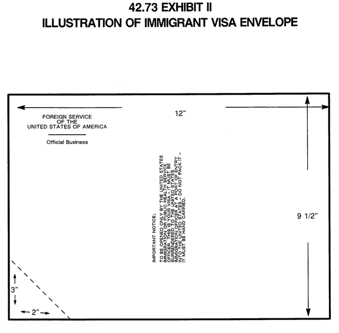

(U) Immigrant Visa Issuance
(CT:VISA-2194; 06-17-2026)
(Office of Origin: CA/VO)
9 FAM 504.10-1 (U) statutory and regulatory Authorities
9 FAM 504.10-1(A) (U) Immigration and Nationality Act
(CT:VISA-1; 11-18-2015)
(U) INA 101(a)(16) (8 U.S.C. 1101(a)(16)); INA 206 (8 U.S.C. 1156); INA 221(a) (8 U.S.C. 1201(a)); INA 221(c) (8 U.S.C. 1201(c)); INA 222(b) (8 U.S.C. 1202(b)); INA 224 (8 U.S.C. 1204).
9 FAM 504.10-1(B) (U) Code of Federal Regulations
(CT:VISA-1; 11-18-2015)
(U) 8 CFR 211.1(b)(1); 8 CFR 211.3; 22 CFR 42.64(b); 22 CFR 42.71; 22 CFR 42.72; 22 CFR 42.73; 22 CFR 42.74.
9 FAM 504.10-1(C) (U) Public Law
(CT:VISA-1; 11-18-2015)
(U) Public Law 97-359.
9 FAM 504.10-1(D) (U) Executive Orders
(CT:VISA-1; 11-18-2015)
(U) E.O. 10718.
9 FAM 504.10-2 (U) Standard Procedures in Issuing Visas
9 FAM 504.10-2(A) (U) Immigrant Visa Validity
(CT:VISA-1869; 11-22-2023)
(U) Per INA 221(c), an IV is normally valid for a maximum of six months except for certain visas issued to a child lawfully adopted by a United States citizen and spouse while such citizen is serving abroad in the United States Armed Forces, or is employed abroad by the United States Government, or is temporarily abroad on business. See INA 221(c), in part.
(1) (U) Visa Validity Depends on Medical Examination Validity: As explained in 9 FAM 302.2-3(C) paragraph b, notwithstanding the provisions of INA 221(c), you should make sure to limit the validity of the visa to the validity of the medical examination for all IVs except certain Afghan SIVs with medical exam waivers. For example, if an applicant has a medical examination that is only valid for four months from the time of visa issuance, the visa should be valid for only four months. If CDC approves an extension of the original medical examination validity, you should limit the visa to the new CDC-approved validity date up to a maximum six-month visa validity and enter IVO case note: Medical Exam Expiration Extended by One Month per CDC Approval.
(a) (U) Visa Validity for Certain Afghan SIVs: On August 12, 2021, the Deputy Secretary of State for Management and Resources and the Deputy Secretary of Homeland Security jointly issued a blanket waiver of the requirement to undergo a medical exam before IV issuance or admission to the United States for certain Afghan SIV applicants who are in Afghanistan, who have met all requirements for SIV issuance other than the medical exam, and for whom the Chief of Mission has determined are unable to complete the required medical exam promptly without undue hardship or risk to personal safety. This waiver is valid through August 11, 2022, and may be extended for additional one-year periods. The visa validity for Afghan SIV applicants whose medical exams are waived is six months from the date of visa issuance, unless the applicant is a child turning 21 years old, where the expiration is the child’s twenty-first birthday.
(b) (U) See 9 FAM 302.2-3(A) for additional guidance regarding this waiver.
(2) (U) Limitation of Visa Validity to Meet Passport Validity Requirement: If an immigrant is required to present a valid passport, determine whether the applicant’s passport is valid for at least 60 days beyond the validity of the visa, as required in 22 CFR 42.64(b). You may limit the validity of the visa to less than six months if the passport is valid for 60 days plus a period sufficient to enable the applicant travel to the United States. If the applicant is excepted from the 60-day validity requirement under 22 CFR 42.64(b), you may limit the validity of the visa to less than six months to coincide with the validity of the passport if there will be enough time for the applicant to travel to the United States.
(3) (U) Special Validity Considerations Regarding Children: 8 CFR 211.1(b)(1) provides for the entry, without a visa, of a child born after the issuance of a visa to the parent. See 9 FAM 201.2-3.
(4) (U) Ineligibility Under Public Law 104-208: An applicant applying for redetermination of admissibility must meet the additional grounds of ineligibility under Public Law 104-208.
(5) (U) Arrival in United States After Visa Expiration: DHS regulation, 8 CFR 211.3, provides that an IV, reentry permit, refugee travel document, or I-551, should be regarded as unexpired if the rightful holder:
(a) (U) Embarked before the expiration of the IV, reentry permit, or refugee travel document or, with respect to the I-551, before the first anniversary of the date of departure from the United States; and
(b) (U) The vessel or aircraft arrives in the United States or foreign contiguous territory on a continuous voyage.
(6) (U) Defining "Continuous Voyage": The continuity of the voyage should not be deemed to have been interrupted if the applicant:
(a) (U) Makes scheduled or emergency stops en route to the United States or foreign continuous territory;
(b) (U) Lays over in foreign contiguous territory for the sole purpose of effecting a transportation connection to the United States; or
(c) (U) Transfers to another conveyance in a foreign contiguous territory solely to connect to onward transportation to the United States.
9 FAM 504.10-2(B) (U) Machine Readable Immigrant Visas
(CT:VISA-1869; 11-22-2023)
(U) The machine-readable IV (MRIV) is printed on the same adhesive foils used for NIV and includes the following information:
(1) (U) Biographic data about the IV applicant;
(2) (U) Information about the IV itself (issuing post, visa type, case number, date of issuance and date of expiration);
(3) (U) The registration number (A-number) assigned to the immigrant;
(4) (U) Any annotations entered to reflect waivers or other information useful for the POE upon the applicant's admission to the United States;
(5) (U) A digitized photo of the visa recipient; and
(6) (U) Two lines of machine-readable data scanned by the immigration officer at the POE.
9 FAM 504.10-2(C) Information to Include on the Immigrant Visa
9 FAM 504.10-2(C)(1) Visa Recipient Name
(CT:VISA-1869; 11-22-2023)
a. Consistent Spelling of Applicants' Names on Visas and Passports:
(1) DHS requires that an applicant's name be spelled on Form I-94, Arrival and Departure Record, exactly as the name appears on the applicant's passport to avoid difficulty in identifying and processing the applicant. You must assist DHS by ensuring that the names of visa applicants are spelled the same on their Forms DS-260, IVs, and passports. If an applicant's name has been misspelled on the passport, they must have the passport amended to show the correct spelling. All other documents must also show the same correct spelling.
(2) An applicant who marries after the filing of the petition Form I-130, Petition For Alien Relative, or Form I-140, Immigrant Petition For Alien Worker, but before visa issuance, and changes their name must indicate this change on the DS-260 by answering yes to "Have you ever used another name (i.e., maiden, religious, professional, alias, etc.)?" and listing their prior name and any other surname in the "Other Surnames Used (maiden, religious, professional, alias, etc.)" field. If the DS-260 has already been submitted, the applicant must advise you of the marriage and name change to ensure that the DS-260 is amended. You must enter the prior name into IVO as an alias. It is not necessary for an applicant falling within the purview of this note to obtain a new or amended passport unless local regulations so require.
b. Alias Information: Enter alias information into IVO as part of applicant entry. Limit alias information to names that identify the individual. Include maiden names, anglicized names, which may have been used in the United States, and other distinct names used by the applicant. Do not, however, include nicknames derived from the real names.
c. Spanish Name Indexing: Enter Spanish names into IVO in strict compliance with the instructions in 9 FAM 303.2-14. These instructions accord with the DHS indexing system and must be followed. Enter Spanish names in the same sequence on visa applications, visas, and passports.
9 FAM 504.10-2(C)(2) "City and Country of Birth" and "City and Country of Last Residence"
(CT:VISA-1869; 11-22-2023)
a. Enter the city and country of birth into IVO. If applicable, enter the region of birth as well. "CITY AND COUNTRY OF LAST RESIDENCE" refers to the last residence outside the United States. Do not enter a U.S. address into this data field.
b. Exception for Tibetans: Applicants of Tibetan origin who are properly chargeable to China have occasionally vehemently protested the policy of showing China on their IV as their country of chargeability and/or place of birth. In such instances, the general policy of showing the country of chargeability and the fact that Tibet is part of China for visa chargeability purposes must be explained to the applicant. You may make exceptions to showing China as the country of chargeability in individual cases after considering all the circumstances if the internal records of the Department clearly permit the visa to be tracked to China for chargeability purposes. This may be done by entering the code "CCCC" into the computer program that generates the MRIV, which will result in "unassigned" appearing in the relevant places on the visa.
9 FAM 504.10-2(C)(3) "Mother's First Name" and "Father's First Name"
(CT:VISA-1869; 11-22-2023)
Ensure that only the first (given) name of each parent is entered in the IVO data fields. Only in the case of a hyphenated name should more than a single name be included. Additional names or the full name should not be included.
9 FAM 504.10-2(C)(4) "Final Address in the United States"
(CT:VISA-1869; 11-22-2023)
Ensure that the final address in the United States is complete and accurate, including a ZIP code when it can be determined. This is the address that DHS will use to mail the applicant the "green card." The state must be in the form of the official two-letter U.S. postal code. Be sure to specify "care of" (c/o) to the principal resident at the U.S. address entered into the relevant IVO data fields. Failure to indicate the "c/o" designation may result in the return of the green card to DHS.
9 FAM 504.10-2(C)(5) Amerasian Notation Under Public Law 97-359
(CT:VISA-1408; 11-02-2021)
Public Law 97-359 requires DHS to report statistics on Amerasians and their dependents who receive IV under the terms of that law. So that DHS inspectors at ports of entry (POE) may be able to identify these cases, use the appropriate IV codes listed in IVO; they begin with the letter "A."
9 FAM 504.10-2(D) (U) Importance of Proper Assembly of Immigrant Visas and Supporting Documents
(CT:VISA-1869; 11-22-2023)
(U) Visas must be prepared strictly in accordance with the prescribed procedure. This is not only to reduce the possibility of fraud, but also to prevent the visas from becoming separated from the proper supporting documents, while in the hands of travel agents, pursers, government officials, the courts, and persons DHS files over many years.
9 FAM 504.10-2(D)(1) (U) Assembling Immigrant Visa Application Materials and Relevant Notations
(CT:VISA-1408; 11-02-2021)
a. (U) In cases where the applicant has submitted the DS-260, you should attach all the supporting documents together, except medical documents in Class A or B tuberculosis cases and X-ray film. Supporting documents include copies of all civil documents that are pertinent to the relationship between Petitioner and Beneficiary and the Affidavit of Support. You should be careful NOT to include any criminal information on the Petitioner that may have been included in the case file or any documents that are law enforcement sensitive. See 9 FAM 504.10-2(D) above.
b. (U) For PIVOT cases, ensure all supporting documents as enumerated above are included in eDP. Reject all unnecessary documents from eDP.
9 FAM 504.10-2(D)(2) (U) Petitions
(CT:VISA-1869; 11-22-2023)
a. (U) In Cases Where the Applicant has Submitted the DS-260:
(1) (U) If an approved petition has been received, attach all supporting documents received from the applicant under the petition and any documents affixed to the petition. (Do not detach the documents from the petition.) If DNA tests were recommended as supporting evidence of the relationship, attach the report of such tests, or a certified copy thereof, to the petition. If the applicant is a beneficiary of more than one petition, attach all petitions.
(2) (U) If the spouse or children of the beneficiary of an approved petition will benefit from the same status, include the petition in the principal applicant's document envelope. Insert a notation in the CCD Web Application Report associated with the DS-260, using either the general notation function or the notation function associated with the spouse, children and/or parent sections. Notations should be entered in the CCD Application Web Report association with the DS-260 executed by each applicant.
b. (U) If you issue the IV based on an official notification from DHS, include a copy of the notification in the IV envelope if the visa is issued before the petition is received. In such a case, when the petition is received, return it to the DHS approving office with a memorandum indicating:
· (U) Date visa issued;
· (U) Kind of visa and number, if assigned;
· (U) Name of person to whom visa was issued;
· (U) Port and date of arrival of beneficiary in the United States, if known; and
· (U) Intended place of residence of beneficiary in the United States as stated in the visa.
9 FAM 504.10-2(D)(3) (U) Document Arrangement
(CT:VISA-1869; 11-22-2023)
a. (U) For IVIS cases, attach all supporting documents, except for medical documents in Class A or B tuberculosis cases and X-ray film and support documentation for the Affidavit of Support, face up and attached to each to each other by staple or round-head brass paper fastener in the top center.
b. (U) You should not print out the DS-260, or the associated Online IV Application Report, or place either document in the packet.
9 FAM 504.10-2(D)(4) (U) Medical Documents
(CT:VISA-1869; 11-22-2023)
a. (U) Disposition of the medical documents will vary depending on whether a class A or B medical condition exists. See 9 FAM 302.2-3(F)(10) for specific information on disposition of medical documents after visa issuance to applicants with and without class A or B medical conditions. See 9 FAM 302.2-3(C) for information about validity of medical examination.
b. (U) Applicants Exempt from Vaccination Requirement: The adoptive or prospective adoptive parent(s) must provide an original copy of the signed affidavit DS-1981 to you either before or at the visa interview for inclusion in the case file. Attach this copy to the Form DS-2054, Report of Medical Examination by Panel Physician, and include with the supporting documents attached to the issued IR-3 or IR-4 visa.
9 FAM 504.10-2(D)(5) (U) Affidavit of Support and Other Supporting Documents
(CT:VISA-1408; 11-02-2021)
a. (U) In IVIS cases, the Form I-864, Affidavit of Support Under Section 213A of the Act, must be included in the stapled visa packet along with the support documents.
b. (U) In IVIS cases, supporting documents should be included in the visa packet but should not be stapled or grommeted to the Form I-864 or other documents attached to the visa package. Supporting documents consist of the following:
(1) (U) The most recent Federal income tax return filed before the time of Form I-864 signing; and
(2) (U) Evidence of assets and liabilities (if applicable).
c. (U) In PIVOT cases, the Form I-864, Affidavit of Support and supporting documents should be properly scanned into eDP. Reject extraneous documents from eDP.
9 FAM 504.10-2(D)(6) (U) Documents for Dependents
(CT:VISA-1408; 11-02-2021)
a. (U) Documents for Accompanying Dependents: Each applicant must submit a signed Form I-864, Affidavit of Support Under Section 213A of the Act (and Form I-864-A, Contract Between Sponsor and Household Member, if needed). If, however, the principal applicant and dependents will travel together, only one complete set of supporting documents is required. The supporting documents should be included in the principal applicant's visa packet and the principal applicant's applicant registration number should be recorded on each accompanying dependent's Form I-864 in the "FOR AGENCY USE ONLY' box on page 1.
b. (U) Documents for Following-to-Join Dependents: Each applicant must submit a signed Form I-864, Affidavit of Support Under Section 213A of the Act (and Form I-864-A, Contract Between Sponsor and Household Member, if needed). If all following-to-join applicants will travel together, only one complete set of supporting documents is required. The documents should be included in one applicant's visa packet and their applicant registration number should be recorded on each accompanying dependent's Form I-864 in the "FOR AGENCY USE ONLY' box on page 1 for all following-to-join immigrants.
c. (U) Documents for Family Members with Separate Petitions: If separate petitions have been filed for family members, even accompanying or following-to-join relatives, a complete set of supporting documents is required for each principal applicant.
9 FAM 504.10-2(D)(7) (U) Assembling a Visa Packet
(CT:VISA-1869; 11-22-2023)
a. (U) For paper-based legacy (IVIS) cases (except Afghan SIV cases; see paragraph c below), place the Immigrant Data Summary page which is printed after the IV is printed and Q&Aed on top of the envelope containing the supporting documents, aligning the upper left corner of the Summary pages and the supporting documents protruding through the envelope. If applicable, you should place these on top of the envelope containing Form DS-2054, Report of Medical Examination by Panel Physician; Form DS-3030, Tuberculosis Worksheet; Form DS-3025, Vaccination Documentation Worksheet; and Form DS-3026, Medical History and Physical Examination Worksheet. Attach the Summary Page, supporting documents, and Form DS-2054 envelope (if applicable) with two heavy-duty staples in the upper left corner of Summary Page, well above the space for the applicant's name to avoid obscuring the name. When attaching an envelope containing medical forms, you should ensure that staples do not go through the documents inside the envelope. The visa packets of members of a family group must be assembled individually and not be attached together with staples. See 9 FAM 302.2-3(F)(10) paragraph a for packet requirements for IVIS cases with eMedical and paper medical forms.
b. (U) For electronic (MIV/PIVOT) cases, annotate the IV with "IV Docs in CCD." CBP officers will be able to view the case documents electronically upon the applicant's arrival at the POE. The Immigrant Data Summary page is not required to be scanned or uploaded into eDP. No paper visa packet is required, except for MIV cases with paper medical forms for an applicant with a Class A or Class B condition (except Class B other). For such cases, the Immigrant Data Summary page must be included with the skinny packet. See 9 FAM 302.2-3(F)(10) paragraph a for requirements for MIV cases with eMedical and paper medical forms.
c. (U) Special procedures for Afghan SIV cases: Afghan SIV cases, whether based on a Form I-360 or Form DS-157, must be handled like an electronic (MIV/PIVOT) case. CBP officers will be able to view the case documents electronically upon the applicant's arrival at the POE, and USCIS will receive the case data and associated documents electronically to complete the A file.
(1) (U) Annotate the IV with "IV Docs in CCD."
(2) (U) Ensure all relevant supporting documents are included in eDP. Any documents included in eDP by the IV unit must be scanned in at 300 DPI, consistent with 9 FAM 601.6-4.
(3) (U) The Immigrant Data Summary page is not required to be scanned or uploaded into eDP.
(4) (U) Ensure the medical exam is completed in eMedical whenever possible.
(a) (U) Afghan SIV applicants whose medical examinations were processed in eMedical do not need to physically carry medical forms to the United States, but ensure that Form DS-7794 is uploaded in eDP.
(b) (U) If an Afghan SIV applicant has a paper medical form, upload Form DS-2054 and other paper medical forms into eDP. If the applicant has a Class A or Class B condition (except Class B other), applicants must hand-carry a skinny packet with a single copy of each paper form (Form DS-2054, Form DS-3025, Form DS-3026, Form DS-3030) in a sealed envelope with the Immigrant Data Summary Page attached to the envelope. See 9 FAM 302.2-3(F)(10) paragraph (a) for further guidance on the requirements related to medical exams.
9 FAM 504.10-2(D)(8) (U) Document Placement in Envelope
(CT:VISA-1869; 11-22-2023)
a. (U) For Paper-based Cases:
(1) (U) Put all supporting documents into a 9-1/2" x 12" Kraft envelope with gummed flap and "Foreign Service of the United States of America" and "Official Business" printed thereon, from which the bottom left corner has been cut. Make the cut by starting 3" from the bottom of the envelope and continuing on an angle of approximately 50 degrees to a point 2 inches from the left side of the envelope. The envelope must bear the following wording in large type:
IMPORTANT NOTICE:
TO BE OPENED ONLY BY A U.S. IMMIGRATION OR PUBLIC HEALTH SERVICE OFFICER. THIS IS YOUR VISA. IT MUST BE SURRENDERED TO THE U.S. IMMIGRATION OFFICER AT A PORT OF ENTRY INTO THE UNITED STATES. DO NOT PACK IT; IT MUST BE HAND-CARRIED.
(2) (U) Place all supporting documents in the envelope so that the upper left corner of the packet protrudes through the missing corner of the envelope.
b. (U) Using Rubber Stamp Seal and Initials When Sealing Envelopes: Seal all envelopes containing the visa documentation by imprinting the rubber stamp seal one time in the center where the flap is glued to the body of the envelope.
c. (U) Illustration of IV Envelope:

9 FAM 504.10-2(E) (U) Other Required Steps
9 FAM 504.10-2(E)(1) (U) Cancelling Nonimmigrant Visa When Immigrant Visa Issued
(CT:VISA-1408; 11-02-2021)
(U) If an applicant for an IV holds a valid NIV, the NIV must be canceled when the IV is issued. No certificate of invalidation or other report is required. If an IV is issued to the bearer of a valid border crossing identification card, the card must be canceled or destroyed. No record is to be made of such cancellation or destruction.
9 FAM 504.10-2(E)(2) (U) Applicant of Marriageable Age Issued Visa as Child or Unmarried Son or Daughter
(CT:VISA-1869; 11-22-2023)
(U) During the visa interview, inform any IV applicant of marriageable age – whose eligibility for the visa classification is dependent on the applicant being unmarried – that they must be unmarried when they apply for admission to the United States. Failure to remain unmarried before seeking admission to the United States could result in visa revocation and possible loss of LPR status, if admitted. This obligation to inform applies to any applicant, of marriageable age, classified as an immigrant child, either as the beneficiary of a child petition (IR2, CR2) or as a derivative child in any other IV category. It also applies to first or second preference beneficiaries in the unmarried son or daughter categories (F11, F24). A marriageable age is the minimum legal age to marry in the applicant’s country of residence. Confirm that the applicant is unmarried and include the following case note: “Beneficiary/applicant affirms that they are unmarried and understands that they will be admissible only if unmarried at the time of application for admission to the United States.”
9 FAM 504.10-2(E)(3) (U) Attaching Statement to Visa Issued Under Numerical Limitation
(CT:VISA-1869; 11-22-2023)
(U) When a visa is issued under the provisions of INA 203(a) or (b) the IV unit must provide the following statement along with the IV:
“If, for any reason, you are unable to use your visa, you are requested to return it to this office. Failure to return your unused visa may result in an unnecessary delay in the issuance of a visa to some other qualified applicant. Your cooperation in this regard will enable this office to issue a visa to another applicant promptly. Should you, within the near future, desire to reapply for an immigrant visa, every possible consideration will be given to granting you the benefit of your original priority date on the waiting list.”
9 FAM 504.10-2(E)(4) (U) Social Security Registration
(CT:VISA-2194; 06-17-2026)
a. (U) The Social Security Act requires that every new immigrant, regardless of age, be issued a Social Security number (SSN) when admitted to the United States. Immigrants applying to enter the United States may apply for their SSN on the DS-260, Social Security Number Information Page, if they will be 18 years of age or older upon their arrival. Those who do so can expect to receive their SSN card at their new U.S. address within three weeks of arriving. See paragraph c below for further explanation.
b. (U) Those who cannot or do not apply for their SSN cards on their visa application must visit their local Social Security office to apply once they have a permanent address in the United States. Applicants must bring their passport with their IV or I-551, if they have it and their birth certificate and a birth certificate for each member of their family applying for a Social Security number.
c. (U) Social Security Numbers for U.S. Permanent Residents:
SOCIAL SECURITY NUMBERS FOR U.S. PERMANENT RESIDENTS
We are pleased you intend to immigrate to the United States. Upon admission to the United States based on your immigrant visa, you will be a U.S. permanent resident. Each permanent resident needs a Social Security Number (SSN). A SSN will help you to work in the United States, to conduct business with a bank or financial institution, to pay your taxes or to be listed as a dependent on a tax return, and for other purposes.
If You Requested a Social Security Number When You Applied for Your Visa
If you, your parents, or proper applicant requested an SSN card as part of your visa application, [U.S. Department of State (DoS) Form DS-260 (question 63a and 63b)], when you arrive in the United States, the U.S. DoS and the U.S. Department of Homeland Security (DHS) will send the Social Security Administration (SSA) the information needed to issue you an SSN card.
The Social Security Administration will automatically assign you an SSN and issue you a Social Security card after you arrive in the United States. If you already have an SSN, a replacement card will be issued. You do not need to fill out a special application or go to a Social Security office to get an SSN.
The SSN card is mailed to the U.S. mailing address where the Department of Homeland Security will send your Permanent Resident Card. You should receive your Social Security card within 3 weeks after you arrive. You do not need to go to a Social Security office to receive a replacement card.
IMPORTANT: Call SSA (1-800-772-1213) if you do not receive your Social Security card after 3 weeks or if you change your mailing address after arrival in the United States. If you call us, please have this letter with you. It will help us answer your questions.
If You Did Not Request a Social Security Number When You Applied for Your Visa
You must visit a Social Security office to apply for an SSN if you did not request an SSN card as part of your visa application when you arrive in the United States. When you have a permanent address, please call SSA (1-800-772-1213) to find out where to apply for an SSN card.
When you visit a Social Security office to apply for a Social Security card, take the following papers with you:
Your passport with your Machine-Readable Immigrant Visa (MRIV) or Permanent Resident Card (Form I-551) if you have it for each member of your family applying for a Social Security number. and
Your birth certificate and a birth certificate for each member of your family applying for a Social Security number.
Applicants 12 years old and older must visit the office in person to be issued an original SSN card
If you are applying for a replacement card, you will only need your passport with your MRIV or Permanent Resident Card (Form I-551), if you have received it.
A Social Security representative will assist you in the completion of the application. You should receive your SSN card within 2 weeks after we have everything we need to process your application. It may take longer if we need to verify any of your documents.
Additional Information
The information you give us for getting an SSN is confidential. This means that we do not share your information except as provided for under the law. For example, we may share information with other government agencies as permitted under the Privacy Act. For more information about this, please contact SSA (1-800-772-1213).
In the United States, you may call the telephone number listed for the Social Security office in the local telephone directory under “United States Government” or Social Security's toll-free number, 1-800-772-1213.
You can also find the nearest Social Security office using the office locator tool on the Internet at www.socialsecurity.gov . If you need to contact us before you leave for the United States, contact the U.S. embassy or consulate in your area. In the Philippines, contact the Veteran's Affairs Regional Office in Manila.
d. (U) The letter in paragraph c above should be reproduced locally and given to all persons issued IVs or refugee documentation. Where appropriate, you may arrange for translation and printing in the local language on the reverse of the English version. Department approval of translations is not required.
9 FAM 504.10-2(E)(5) (U) Selective Service Registration
(CT:VISA-1408; 11-02-2021)
a. (U) Under the provisions of the Military Selective Service Act and the Presidential Proclamation dated July 2, 1980, registration is required for males who have attained their 18th birthday but not reached their 26th birthday. Such applicants must present themselves to a U.S. Post Office designated for registration within 30 days after entering the United States.
b. (U) The DS-260, which all IV applicants must complete, notifies applicants of the requirement to register with the Selective Service System.
9 FAM 504.10-2(E)(6) (U) Attaching Pertinent Provisions of Foreign Law to the Visa of an Applicant Convicted of Certain Offenses
(CT:VISA-1869; 11-22-2023)
a. (U) When the police record does not clearly show that an offense of which an applicant was convicted does not involve moral turpitude within the meaning of INA 212(a)(2)(A)(i)(I), for IVIS cases, attach a copy of the pertinent foreign statute, together with its translation, to the police record. Attaching the text of the foreign statute will facilitate the examination of the applicant at POE.
b. (U) In PIVOT cases, these documents should be uploaded by the IV Unit into eDP.
9 FAM 504.10-3 (U) Special Procedures in Issuing immigrant Visas
9 FAM 504.10-3(A) (U) Conditional Residents
9 FAM 504.10-3(A)(1) (U) Applicants Classified as Conditional Immigrants
(CT:VISA-1408; 11-02-2021)
a. (U) The administration of the Immigration Marriage Fraud Amendments of 1986 falls mostly on the DHS.
b. (U) The primary responsibility of consular officers is to identify, at the time of visa issuance, marriages of less than two years which have been the basis of petition approval. If an applicant's basis for immigration is a marriage to a petitioner which was entered into less than two years before the date of visa issuance, the consul must classify the applicant as a "conditional immigrant" using the appropriate symbol listed below:
(1) (U) CR1-Spouse of a U.S. citizen;
(2) (U) CR2-Child of a CR1 applicant (stepchild of petitioner);
(3) (U) C21-Spouse of LPR (subject to country limitation);
(4) (U) C22-Child of LPR (subject to country limitation);
(5) (U) C23-Child of C21 or C22;
(6) (U) CX1-Spouse of LPR (exempt from limitations);
(7) (U) CX2-Child of applicant resident (exempt from limitations);
(8) (U) CX3-Child of CX1 or CX2;
(9) (U) C24-Unmarried son/daughter of LPR;
(10) (U) C25-Child of C24;
(11) (U) C31-Married son/daughter of U.S. citizen;
(12) (U) C32-Spouse of C31; or
(13) (U) C33-Child of C31.
c. (U) The Immigration Act of 1990 creates a conditional status for employment-based 5th preference employment-creation visas. The appropriate symbols are listed below:
(1) (U) C51-Employment-creation outside targeted area;
(2) (U) C52-Spouse of C51;
(3) (U) C53-Child of C51;
(4) (U) T51-Employment-creation in targeted area;
(5) (U) T52-Spouse of T51; and
(6) (U) T53-Child of T51.
9 FAM 504.10-3(A)(2) (U) Notice Of "Conditional Status"
(CT:VISA-1408; 11-02-2021)
a. (U) Applicants normally entitled to IR-1, IR-2, F21, F22, F23, F24, F25, F31, F32, or F33 classification will be granted “conditional status” (C21, C22, CX1, CX2, CX3, C24, or C25, respectively) at the time of visa issuance if:
(1) (U) The basis for immigration is a marriage to a petitioner, which was
(2) (U) Entered into less than 2 years before the applicant’s admission to the United States as an immigrant. See 9 FAM 504.10-3(A)(1) above.
b. (U) All information packages for applicants in these categories must include a notice of conditional status. The text of the notice is to be followed verbatim:
“If, at the time of admission to the United States you will not have celebrated the second anniversary of your marriage, which is the basis of your immigrant status, you are subject to the provisions of section 216 of the Immigration and Nationality Act. Under the provision, you will be granted conditional permanent residence by an officer of the U.S. Citizenship and Immigration Services (USCIS) at the time of your admission to the United States. As a result, you and your spouse must file a joint petition with the Immigration and Naturalization Service to have the conditional status removed. The petition must be filed within the 90-day period immediately preceding the second anniversary of the date you were granted conditional permanent resident status. If a petition to remove the conditional basis of your status is not filed within this period, your conditional permanent residence status will be terminated automatically and you will be subject to removal from the United States.”
c. (U) Information regarding conditional status will also be on travel.state.gov.
9 FAM 504.10-3(B) (U) Annotations
9 FAM 504.10-3(B)(1) (U) Annotations - Overview
(CT:VISA-1869; 11-22-2023)
a. (U) You should annotate the IV with information that is helpful to the immigration officer at POE upon the applicant’s admission to the United States. IVO includes most common annotations in a drop-down list, or annotations can be manually entered using up to 44 characters per line.
b. (U) Indicate any waivers approved by USCIS by annotating the visa. IVO includes drop-down annotations for most waivers that you may use and edit, if necessary.
c. (U) Because a beneficiary may not precede the principal applicant in entering the United States, indicate if the applicant is a beneficiary accompanying or following to join the principal applicant. You should use the IVO drop-down annotation: “Valid only if Acc/FTJ Father/Mother/Spouse.” Annotate the IV for derivative beneficiaries to inform both the applicant and the POE that they cannot precede the principal applicant in entering the United States and their visa is valid only if they accompany or follow-to-join the principal applicant.
d. (U) Unless additional space is needed, annotations should be placed on the following lines regardless of whether the higher lines contain content:
(1) Unavailable
(2) (U) Line 2: Class A or B Medical Clearances, Waivers, or Other Annotations, such as "Valid only if Acc/FTJ Father/Mother/Spouse" - If applicable; and
(3) (U) Line 3: IV DOCS IN CCD - Mandatory for MIV/PIVOT cases.
(4) (U) If there is not enough room on a single line to add an annotation and no additional lines are available, you should abbreviate as needed to include the necessary information.
9 FAM 504.10-3(B)(2) (U) Immigrant Passport Waivers
(CT:VISA-2141; 03-26-2025)
a. (U) If the passport requirement for an immigrant is waived under 22 CFR 42.2(a) through (f) as detailed in 9 FAM 201.2-4, you should annotate the IV MRV foil to indicate the waiver is authorized under 22 CFR 42.2. This will help the carriers and POE determine if an immigrant without a valid passport is properly documented. For example, if the passport is waived in the case of an immigrant who is the spouse of a U.S. citizen, the annotation should read:
“PASSPORT NOT REQUIRED PER 22 CFR 42.2(a).”
b. (U) If a passport is not required under an individual waiver as detailed in 9 FAM 201.2-5, the annotation should contain a reference to 22 CFR 42.2(g) as well as to the date and number of the specific instruction from the Department. In such a case the notation on the visa should read:
"PASSPORT WAIVED PER 22 CFR 42.2(g) BY DHS and STATE DEPT: DATED MM/DD/YY."
c. (U) The IV MRV should be placed on Form DS-232, Unrecognized Passport or Waiver Cases, which is used in lieu of a passport. See 9 FAM 403.9-6(B). If the immigrant has a travel document (expired or unrecognized passport, for example), you should attach it to the travel document as described in 9 FAM 403.9-6(B), which contains detailed instructions on using Form DS-232. See also 9 FAM 303.8-6 and 9 FAM 303.8-7 for information on processing DS-232 cases in IVO.
9 FAM 504.10-3(B)(3) (U) Annotation for Waivers Under 212(E), (G), (H), OR (I)
(CT:VISA-1408; 11-02-2021)
(U) If an applicant has been accorded the benefits of INA 212(e), (g), (h), or (i), annotate the MRV, add appropriate case notes to IVO and scan relevant documents into IVO. Make a note on the Online IV Application Report associated with the applicant's submitted DS-260 using the general notation function, regarding the INA section invoked.
9 FAM 504.10-3(B)(4) (U) Annotation to Reapply for Admission
(CT:VISA-1408; 11-02-2021)
(U) DHS may grant permission to reapply for admission to the United States to an immigrant otherwise ineligible under INA 212(a)(9)(A). However, such permission to reapply does not remove the grounds which led to the applicant's denial of admission to or removal from the United States. The reason for such denial of admission or removal may lead to another ground of ineligibility. If consent to reapply for admission has been granted to an applicant, annotate the MRV "212(a)(9)(A): consent to reapply granted by DHS," make appropriate case notes, scan relevant documents into IVO, and make a note on the Online IV Application Report associated with the applicant's submitted DS-260 using the general notation function.
9 FAM 504.10-3(B)(5) (U) Notation if Public Charge Bond Posted
(CT:VISA-1869; 11-22-2023)
(U) If a public charge bond has been posted on behalf of an applicant, insert an endorsement on the Online IV Application Report associated with the applicant's submitted DS-260 using the general notation function, showing the amount of the bond and the date and place of posting. Make appropriate case notes and scan relevant documents into IVO.
9 FAM 504.10-3(B)(6) (U) Notation for Vaccination Waiver
(CT:VISA-1869; 11-22-2023)
a. (U) If a vaccination requirement has been waived, annotate the IV to indicate the appropriate waiver grounds in the annotation field, either "212(g)(2)(A), (B), or (C)," as appropriate.
b. (U) Indicate INA 212(a)(1)(A)(ii) refusals using the code "12V," to avoid confusion with the previous code for ineligibility due to mental and/or physical disorders, and to ensure accurate data sharing with DHS lookouts. You should only enter this code for those cases that are not overcome by a waiver.
9 FAM 504.10-3(B)(7) (U) Applicants Who are the Subject of Private Legislation
(CT:VISA-1869; 11-22-2023)
(U) If an applicant is the beneficiary of a private law, make a notation on the Online IV Application Report associated with the applicant's submitted DS-260 using the general notation function, showing the number of the private law and the provision of law which has been waived or from which relief has been, otherwise, granted by the Congress. When possible, you should also include a copy of the private law in the supporting documents. If you were notified by telegram of the enactment of a private law, you should include the telegram or a certified copy with the other documents.
9 FAM 504.10-3(B)(8) Unavailable
(CT:VISA-1869; 11-22-2023)
Unavailable
9 FAM 504.10-3(C) (U) Lawful Permanent Residents
9 FAM 504.10-3(C)(1) (U) Issuing Immigrant Visa to Lawful Permanent Resident (LPR)
(CT:VISA-1408; 11-02-2021)
(U) DHS and the Department have agreed that an LPR is entitled to apply for and, if qualified, may be issued an IV in any other visa classification. For example, an immigrant who is admitted as a conditional immigrant may at some future date qualify for a visa in an employment-based category and thus be admitted in a non-conditional status. Do not require the applicant to relinquish their I-551 as a condition for issuance of another IV.
9 FAM 504.10-3(C)(2) (U) Recipients of Returning Resident (SB-1) Visas
(CT:VISA-1675; 12-21-2022)
a. (U) A recipient of a returning resident (SB-1) visa will normally possess a I-551. If for some reason the applicant no longer possesses their I-551, you should instruct the applicant to apply for a replacement on Form I-90, Application to Replace Permanent Resident Card.
b. (U) Any previously issued I-551 possessed by the SB-1 applicant should be included in the IV envelope.
9 FAM 504.10-4 (U) Required Notifications
9 FAM 504.10-4(A) (U) Female Genital Mutilation/Cutting (FGM/C) Notification Requirement
(CT:VISA-684; 10-03-2018)
(U) 8 U.S.C. 1374 requires DHS, with the cooperation from the Department of State, to notify visa recipients of the severe harm to physical and psychological health caused by Female Genital Mutilation/Cutting (FGM/C).
9 FAM 504.10-4(A)(1) (U) All Consular Sections Required to Post FGM/C Fact Sheet
(CT:VISA-1675; 12-21-2022)
(U) All consular sections must display the U.S. Government Fact Sheet on Female Genital Mutilation or Cutting (FGM/C) (the FGM/C Fact Sheet) in the NIV and/or IV waiting room. The Fact Sheet must be displayed in English and the relevant local language, if available. For information on where to obtain the FGM/C fact sheet, available translations, etc. see 9 FAM 504.10-4(A)(3) below.
9 FAM 504.10-4(A)(2) (U) Requirement to Provide Copy of FGM/C Fact Sheet to IV Recipients
(CT:VISA-1675; 12-21-2022)
a. (U) The posts listed below are the designated IV processing posts for nationals from countries where FGM/C is prevalent. The posts below are to display the FGM/C Fact Sheet consistent with the guidance in 9 FAM 504.10-4(A)(1) above and to provide a copy of the FGM/C Fact Sheet in either English or the relevant local language to all applicants over the age of 14 issued an IV.
b. (U) List of Posts to Provide Issued Applicant With FGM/C Fact Sheet:
|
Abidjan |
Accra |
Addis Ababa |
Asmara |
|
Baghdad |
Cairo |
Cotonou |
Dakar |
|
Dar es Salaam |
Djibouti |
Erbil |
Freetown |
|
Jakarta |
Juba |
Khartoum |
Lagos |
|
Lome |
Monrovia |
Nairobi |
Niamey |
|
Ouagadougou |
Sana'a |
Yaounde |
|
c. (U) List of Countries Where FGM is Prevalent:
|
Benin |
Burkina Faso |
Cameroon |
Central African Republic |
|
Chad |
Cote d'Ivoire |
Djibouti |
Egypt |
|
Eritrea |
Ethiopia |
Gambia |
Ghana |
|
Guinea |
Guinea-Bissau |
Indonesia |
Iraq |
|
Kenya |
Liberia |
Mali |
Mauritania |
|
Niger |
Nigeria |
Senegal |
Sierra Leone |
|
Somalia |
South Sudan |
Sudan |
Tanzania |
|
Togo |
Yemen |
|
|
9 FAM 504.10-4(A)(3) (U) FGM/C Fact Sheet Resources
(CT:VISA-1981; 05-03-2024)
a. (U) The Department has the FGM/C fact sheet at travel.state.gov in the following languages: Amharic, Arabic, Bahasa, English, French, Somali, Swahili, Tigrinya, and Orimifa. An A2 poster-size version of the FGM/C fact sheet is available on CA Web at the FGM/C portal. FGM/C fact sheet posters and handouts, in English and the relevant local language(s), must be printed at post. Consular sections are authorized to use their MRV allotment or fund site to cover local reproduction costs.
b. (U) If the appropriate local translation is not available, consular sections may create their own notices in the dialects of the country where they serve. If they create a local translation of the FGM/C fact sheet, they must provide a copy to the visa analyst covering FGM/C in VO/F for posting on travel.state.gov.
9 FAM 504.10-4(B) (U) Public and Government Reaction of the Receiving State to FGM/C Notification Requirement
(CT:VISA-2141; 03-26-2025)
(U) The social and political sensitivities surrounding FGM/C in many countries may prompt public or government reaction of the receiving state to the FGM/C Fact Sheet. If you receive questions from applicants about the FGM/C Fact Sheet, you should indicate that United States law makes it illegal to perform or allow others to perform FGM/C in the United States on persons under the age of 18 for other than medical reasons. The law also requires that persons receiving visas be advised of this fact and of the medical and psychological damage caused by FGM/C and direct the individual to information on FGM/C on WomensHealth.gov for more information.
9 FAM 504.10-4(C) (U) Foreign Agents Registration Act
(CT:VISA-1675; 12-21-2022)
(U) The Foreign Agents Registration Act (22 U.S.C. 611 through 613) requires persons within the United States acting as agents of a foreign principal to register with DOJ. The purpose of this Act is “to protect the national defense, internal security, and foreign relations of the United States by requiring public disclosure by persons engaging in propaganda activities and other activities for or on behalf of foreign governments, foreign political parties, and other foreign principals so that the Government and the people of the United States may be informed of the identity of such persons and may appraise their statements and actions in the light of their associations and activities.” Such registration places no restrictions on the lawful activities which may be engaged in by an agent of a foreign principal nor any stigma on anyone so registering. You should assume that registrants have nothing to fear from public disclosure of their activities. If statements obtained from an applicant in connection with a visa application suggest that the applicant may be subject to the registration requirement of the Act, you should inform the applicant and advise that registration forms may be obtained, after arrival in the United States, from DOJ.
9 FAM 504.10-4(D) USCIS Immigrant Fee Handout
(CT:VISA-1408; 11-02-2021)
(U) Most individuals issued IVs must pay a USCIS Immigrant Fee to obtain a "green card." You should provide a copy of the USCIS Immigrant Fee handout to all individuals issued an IV informing them of this fee and how to pay.
9 FAM 504.10-5 (U) Issuance of New or Replacement Visas
9 FAM 504.10-5(A) (U) Issuing Replacement Visas
(CT:VISA-2194; 06-17-2026)
a. (U) Beyond Applicant's Control During Same Fiscal Year of Initial Issuance: If you are satisfied that an applicant will be or was unable to use an IV, including a Diversity Visa (DV), during its validity because of reasons beyond the applicant’s control and for which the applicant is not responsible, and the applicant is seeking a replacement visa during the original IV/DV's fiscal year of issuance, then you may issue a replacement visa with the originally allocated visa number within the same fiscal year. Recall and cancel the originally issued visa and collect once again the appropriate IV application processing fee (including the Diversity Visa Fee for a DV applicant). The only circumstance in which a new fee is not needed for a replacement visa is for certain adoptees, described in paragraph c below. In the case of an immediate relative only, you may issue a replacement visa in the year following the fiscal year in which the original IV was issued.
b. (U) Within Applicant's Control or Outside Fiscal Year of Initial Issuance: An applicant who will be or was unable to use an IV during its validity because of reasons within the applicant's control, or an applicant seeking a replacement visa outside the original IV's fiscal year of issuance (unless an immediate relative), can reapply by resubmitting the DS-260 if the petition has not been revoked and if the basis for immigration still exists (i.e., familial relationship). The appropriate IV application processing fee must be collected again. Diversity visa applicants are not eligible to receive such visa outside of the specific fiscal year for which they were selected (see INA 204(a)(I)(ii)(II)).
c. (U) In the case of an IR/IH-3 or IR/IH-4 re-application, waive the fee for a replacement visa or, upon request, refund such a fee where already paid, if you are satisfied that the applicant, the applicant's parent(s), or the applicant's representative has established that:
(1) (U) The prior IV was issued on or after March 27, 2013, to an applicant who has been lawfully adopted, or who is coming to the United States to be adopted, by a United States citizen;
(2) (U) The adopted applicant or prospective adoptee was unable to use the original IV during its validity as a direct result of extraordinary circumstances, including the denial of an exit permit; and
(3) (U) The inability to use the visa was attributable to factors beyond the control of the adopting parent or parents and of the applicant.
d. (U) Temporary Appearance and Interview Waiver Authority for Certain Replacement Visa Applicants: You may waive the personal appearance and interview requirements of IV applicants whose visas were issued on or after August 4, 2019, but who did not travel to the United States with their visa, so long as they (1) are seeking and qualify for an IV in the same classification and pursuant to the same approved petition as the previously granted IV or are seeking and qualify for an IV in a classification which was automatically converted due to the death or naturalization of the petitioner of the previously issued IV, (2) have no changed circumstances that could affect their eligibility for the visa, and (3) are willing to affirm under penalty of perjury to the information provided on the Form DS-260. This discretionary waiver authority is effective through December 13, 2023.
9 FAM 504.10-5(B) (U) Returning Visa Numbers for Issued Unused Visas
(CT:VISA-1675; 12-21-2022)
a. (U) If a visa recipient, for whatever reason, including death, does not use a visa, you should request the return of the visa. You should cancel and return the visa to the sender and return the visa number to the Department for reallotment to another beneficiary. You may not refund the fee collected for an issued visa even though the unused visa is returned, and the number returned for reallotment, except in the case of certain adoptees described in 9 FAM 504.10-5(A) paragraph c above. See 9 FAM 503.4-4, 22 CFR 42.71(b), and 9 FAM 504.10-2(E)(3) above.
b. (U) The guidance contained in paragraph a above is not intended to curtail or otherwise affect your authority under INA 221(c) to issue a replacement IV.
9 FAM 504.10-5(C) (U) Issuing New or Replacement Visa to Applicant Previously Granted INA 212(g) Waiver
(CT:VISA-1408; 11-02-2021)
(U) You may issue a new or replacement visa to an applicant who was previously granted a waiver under INA 212(g) if the conditions in 9 FAM 302.2-5(D)(1) are met.
9 FAM 504.10-6 (U) Issuance of Duplicate Visas
(CT:VISA-1408; 11-02-2021)
a. (U) In the event an IV or boarding foil is reported lost or stolen, you should first check the ADIS database in the CCD to determine if the visa has already been used for entry into the United States. If, after careful search in ADIS of either the passport number or the name/DOB, you determine that the visa has not yet been used, follow the procedures for reporting issued visas as lost or stolen set forth in 9 FAM 403.9-7. If there are fraud indicators, the case should also be referred to the FPU. In the event the IV was used by the applicant, see 9 FAM 202.2-6 for facilitating the applicant’s return to the United States.
b. (U) In the event an IV has been lost or mutilated, a duplicate visa may be issued within the validity of the original visa. The duplicate visa must contain all the information appearing on the original visa, including the original issuance and expiration dates. The applicant must submit a new DS-260 and provide copies of the supporting documents submitted in support of the original application. The applicant must also pay the application processing fee again.